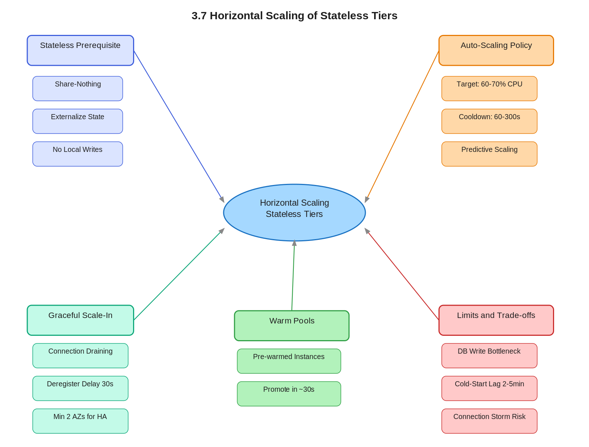

3.7 Horizontal Scaling
of Stateless Tiers
01 Goal of This Subtopic
- Be able to design a stateless tier that scales horizontally on demand — auto-scaling triggers, load balancer integration, connection draining, and warm pool strategies.
- Understand why statelessness is the prerequisite for seamless horizontal scaling and articulate this to an interviewer at the infrastructure level.
- Identify where horizontal scaling breaks down (stateful dependencies, cold-start latency, connection storms) and propose concrete mitigations.
- Compare manual, scheduled, reactive, and predictive scaling and choose the right strategy for a given traffic pattern.
02 What Mastery Looks Like
- Can explain why a stateless service can be added or removed from a pool without coordination, while a stateful one cannot, in under 60 seconds with no notes.
- Can specify a complete auto-scaling policy: metric choice, scale-out threshold, scale-in threshold, cooldown period, and why each value matters.
- Can describe connection draining (deregistration delay) and explain what breaks in its absence.
- Can identify when horizontal scaling hits a wall (e.g., stateful downstream) and propose the architectural fix.
- Can compare manual, scheduled, reactive, and predictive auto-scaling and choose for a given traffic pattern.
03 Study Phases to Achieve Mastery
Goal: Read deeply enough that you could explain the concept without the doc.
- Read DDIA Chapter 1 (Kleppmann) — Scalability section: load parameters and approaches to scaling
- Read AWS Auto Scaling documentation — Target Tracking Scaling Policies and Warm Pools
- Read Google SRE Book Chapter 19 — Load Balancing at the Frontend
- Read ByteByteGo — "Scale from Zero to Millions of Users" (System Design Interview Vol.1, Ch.1)
- Read Netflix Tech Blog — Scryer: Netflix's Predictive Auto Scaling Engine
- Read Sections 5–9 (Core Definition → How It Works) carefully — don't skim
- Re-read the Cheatsheet (Section 4) and recite from memory after
Goal: Reproduce the knowledge in your own words without looking.
- Close the doc — write out the Core Definition from memory, then compare
- Explain First Principles out loud — what pain existed before stateless horizontal scaling?
- Reconstruct the scale-out and scale-in mechanics step by step from memory
- Restate each Trade-off row — if you can't explain the cost, you don't own it yet
Goal: Connect to real systems and simulate interview scenarios.
- Verify each Real-World Example independently and add anything missed to My Notes
- Practice Interview Application out loud — trigger phrases + trade-off statement verbatim
- Work through Common Misconceptions — explain WHY each is wrong, not just that it is
- Trace Relationships to Other Concepts without looking
Goal: Confirm you actually own it, not just recognize it.
- Answer every Self-Check Quiz question out loud without notes
- Recite the Cheatsheet from memory — if you can't, re-do Phase 2
- Tick off Mastery items — only if you can demonstrate on demand, not just if it sounds familiar
- Teach this concept for 2 minutes to an imaginary interviewer without hesitation or notes
04 Cheatsheet

05 Core Definition
06 Core Concepts
07 First Principles — Why Does This Exist?
Before stateless horizontal scaling, the dominant approach was vertical scaling: when traffic grew, you upgraded to a bigger server. This worked until it didn't — every machine has a ceiling, and at that ceiling you were stuck. Worse, vertical scaling required downtime to resize, making it incapable of responding to intra-day spikes.
The deeper problem was that application servers were stateful by default: HTTP sessions in memory, temp files on local disk, sticky connections. Adding a second server meant either replicating that state (complex, error-prone) or forcing users to always hit the same server (sticky sessions, which broke failover). Neither scaled cleanly.
Horizontal scaling of stateless tiers exists because engineers realized: if you move all mutable state out of the application process into dedicated stores, the application tier becomes a pure function — request in, response out. A pure function can run on any number of identical machines simultaneously with zero coordination. This is the architectural unlock that made elastic, cloud-native scaling possible.
08 Mental Models
Model 1: The Vending Machine Fleet
Each stateless instance is a vending machine. Every machine dispenses the same products (all state lives in the warehouse / external store). Demand spikes → drop in more machines. They don't need to know about each other; removing one doesn't affect the others. The load balancer is the signage routing customers to an available machine. Where it breaks: if the warehouse (downstream DB) has limited throughput, more vending machines don't help — they just queue up at the same bottleneck.
Model 2: The Scaling Runway
Think of capacity headroom as an airport runway. The runway must exist before the plane (traffic spike) arrives. If your scale-out trigger is 90% CPU, you have almost no runway — by the time new instances come online, you've already crashed. Setting the trigger at 60–70% gives 2–5 minutes of runway. Warm pools extend the runway — instances are pre-staged and can take traffic in ~30s.
Model 3: The Stateful Dependency Ceiling
Visualize horizontal scaling as widening a pipe. You can widen the front pipe (app tier) freely, but if there's a narrower pipe further down (single-writer DB, Redis leader), total throughput is still capped at the narrowest pipe. Always ask: "What does my app tier touch that is stateful, and what is its write throughput ceiling?" Scaling past that point adds cost with zero throughput gain.
09 How It Works — Mechanics
Scale-Out Path
- 1CloudWatch alarm fires: average CPU across the ASG exceeds 65% for 2 consecutive minutes (evaluation period prevents false positives from momentary spikes).
- 2ASG calculates desired count:
new_desired = ceil(current_desired × (current_metric / target_metric)). E.g., CPU 78%, target 60%, 3 instances → ceil(3 × 78/60) = ceil(3.9) = 4. - 3Instance launch: if warm pool exists, promote in ~30s. Without warm pool, cold boot from AMI: 2–5 min (OS boot + app startup + health check).
- 4Health check registration: LB checks /health → 200 OK. After N consecutive passes (e.g., 2 checks × 30s), live traffic is routed to the new instance.
- 5Cooldown period: ASG waits 120–300s before re-evaluating the metric to let the new instance absorb load and the metric stabilize.
Scale-In Path
- 1Metric drops below threshold (e.g., CPU 40%) for 5+ consecutive minutes (longer stabilization to avoid premature scale-in).
- 2ASG selects instance to terminate: default policy — oldest launch template first, then closest to next billing hour.
- 3Connection draining: LB deregisters the instance — no new requests, but in-flight requests continue until completion or deregistration timeout (30–60s for fast APIs).
- 4Termination: instance terminated after drain completes. If warm pools configured, instance transitions to warm state instead.
Key Parameter Reference
| Parameter | Typical Value | Reasoning |
|---|---|---|
| Scale-out CPU target | 60–70% | Leave 30–40% headroom for startup lag |
| Scale-in stabilization | 5–15 min | Prevent premature scale-in during natural dips |
| Deregistration delay | 30–60s | Match to P99 request duration + buffer |
| Min instances | 2 (across 2 AZs) | HA — survive one AZ failure |
| Health check interval | 30s, 2 checks to pass | Fast enough for failures, slow enough to avoid false positives on startup |
10 Real-World System Examples
| System | How This Concept Applies | Notes |
|---|---|---|
| Amazon EC2 ASG + ALB | The canonical implementation: ALB health-checks instances, ASG target tracking scales on ALB RequestCountPerTarget or CPU | Warm pools introduced 2021 to reduce cold-start lag for large instances |
| Netflix API Tier | Stateless microservices scale out; Hystrix circuit breakers prevent downstream failures from cascading through the scaled-out tier | Each streaming API instance fully replaceable — no local session storage |
| Uber Trip Services | Stateless services (dispatch, pricing, supply) scale independently; state in Schemaless (Cassandra-backed) and Redis | Driver location is a special case — high-frequency writes require careful sharding |
| Kubernetes HPA | Scales pods on CPU, memory, or custom metrics (Prometheus); pods are share-nothing by design in K8s | KEDA extends HPA to queue depth — ideal for worker pools |
| AWS Lambda | Ultimate stateless horizontal scaling: each invocation is an isolated function execution; scaling is per-invocation | Cold starts are the primary challenge — Provisioned Concurrency = warm pool equivalent |
11 Trade-offs
| Benefit | Cost / Limitation |
|---|---|
| Near-linear throughput scaling: 2x instances → ~2x throughput | Bounded by the most-constrained stateful downstream (single-writer DB) — scaling past that limit wastes spend |
| No single point of failure — losing any instance doesn't lose state | Requires full externalization of state upfront — retrofitting a stateful app is non-trivial effort |
| Zero-downtime rolling deploys — no coordination across instances | Cold-start latency (2–5 min) means reactive scaling lags spikes — degraded P99 during spike onset without warm pools |
| Pay only for what you use — scale down at night, up at peak | More instances = more LB connections, more distributed logs, more health check endpoints — operational complexity grows |
| Independent failure domains across AZs | Scale-flapping wastes resources and creates noise — requires careful tuning of cooldowns and stabilization windows |
12 Interview Application
Trigger Phrases
- "How would you handle a 10x traffic spike on your API tier?"
- "What happens to your design during peak hours — Black Friday, say?"
- "The service needs to be highly available and handle variable load."
- "Walk me through how your application tier scales."
What You Say
Trade-off Statement (memorize this)
13 Common Misconceptions & Gotchas
14 Relationships to Other Concepts
| Relationship | Concept | Why |
|---|---|---|
| Builds on | 3.6 Share-Nothing Architecture | The design property that makes horizontal scaling safe — instances must not share state |
| Builds on | 3.3 Externalizing State to Redis | The mechanism enforcing share-nothing at runtime |
| Enables | Topic 4 — Load Balancing | A scalable stateless tier is the prerequisite for meaningful load distribution |
| Enables | Topic 5 — Caching Systems | A larger fleet serves more traffic from the same cache layer — better cache hit rates at scale |
| Tension with | 3.2 Session Management (server-side) | Server-side sessions are fundamentally incompatible — must choose one model |
| Tension with | Topic 15 — Distributed Storage | Scaling the compute tier shifts the bottleneck to the storage tier — you can't solve the whole problem by scaling only one layer |